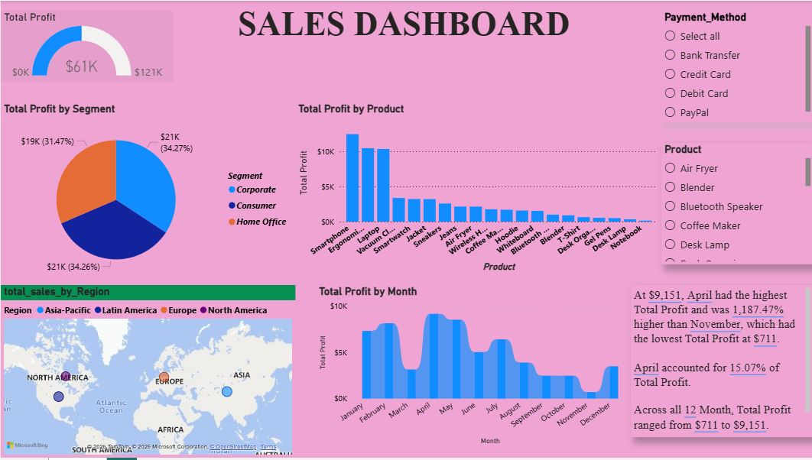

Sales & Profit Analytics Dashboard
- Built an interactive Power BI dashboard covering profit by segment, product, region and month, with slicers for payment method and product.
- Cleaned and shaped the data in Power Query, then wrote DAX measures for the KPIs, charts and trend views.
- Surfaced the business insights a manager would need to make decisions from the data.

- $61Ktotal profit across the year
- Aprilhighest month at $9,151 (15.07% of profit)
- Novemberlowest month at $711
- 3 segmentsCorporate, Consumer, Home Office, each about a third